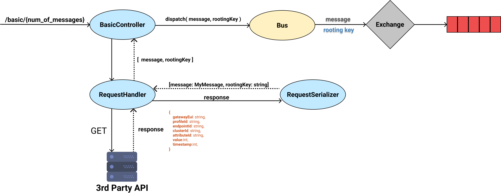
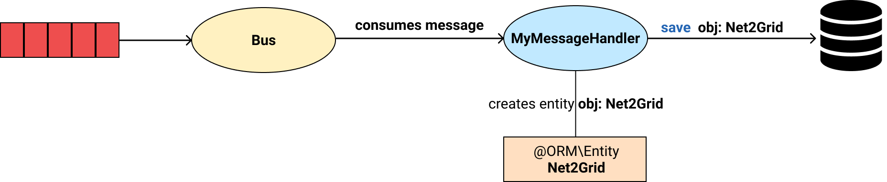

Application's Internals
This section provides an extensive look at application's classes and how these are combined together to provide the desired functionality.
Producing Messages
In order to produce and publish messages to the queue, the following process is necessary.

Several classes are involved in the process:
BasicController
BasicController exposes an endpoint at /basic/{num_of_messages: int}. Each time a request to this endpoint occurs, Symfony
makes sure that BasicController.index() is invoked. There, the controller uses the requestHandler->sendRequest() function, in order to receive a message (type of array) and a rooting key (type of string). The requestHandler is a RequestHandler instance. Then, controller uses the function dispatch(), provided by Symfony Messernger Component, in order to sent the message to the queue. The process is repeated for num_of_messages times. If num_of_messages is not specified, it is considered to be equal to 1.
RequestHandler
RequestHandler exposes a public method named sendRequest. Each time sendRequest() is invoked, a GET request is sent at https://a831bqiv1d.execute-api.eu-west-1.amazonaws.com/dev/results. The response is forwarded to a RequestSerializer instance, in order to construct
a message object, type of MyMessage and a rooting key, type of string. Both the message and the rooting key are
returned as function's result, to BasicController.
RequestSerializer
RequestSerializer is responsible for de-serialization of responses, received by RequestHandler. Each response
has the following format:
{
gatewayEui: string,
profileId: string,
endpointId: string,
clusterId: string,
attributeId: string,
value: int,
timestamp: int
}
The RequestSerializer will turn such a response into a message: MyMessage instance and a rooting key: string.
The rooting key has the form: <gateway eui>.<profile>.<endpoint>.<cluster>.<attribute> and is created by the decimal value of the corresponding values in respone object. The convertion from string to decimal is achieved using the
php build-in function hex2dec_string.
MyMessage
MyMessage is a common php class which defines the data that each queue message contains. MyMessage has the following attributes:
- value
int - timestamp
int - rootingKey
string
In our messenger.yaml file, we have already defined that MyMessage class will be used for rooting by
our tranports. Thus, Symfony Component Messenger knows that it should sent a MyMessage object
to the queue. Additionally, when consuming a message type of MyMessage, it tries to invoke
a proper handler function.
Consuming Messages
In order to consume messages from the queue we need a properly defined class. This class should
implement the Symfony\Component\Messenger\Handler\MessageHandlerInterface. In this application the
corresponding class is named MyMessageHandler.

MyMessageHandler
MyMessageHandler is a class that implements Symfony\Component\Messenger\Handler\MessageHandlerInterface.
Here we override the __invoke(MyMessage $msg), in order to define how to handle
a message each time it is consumed. In our cases, a consumed message's attributes are used in order to create a Net2Grid object, which allows us to store those data in the database.
Note
Note that all we need to do, is declare that the __invoke function accepts as argument a MyMessage object. This way the Symfony Messenger Component knows to use this specific handler each time a message arrives in the Bus, in order to be consumed.
Net2Grid
Net2Grid is a doctrine ORM Entity used to easily save data to the database. The Entity has the following attributes:
- id
ID - gatewaiUi
STRING - profile
STRING - endpoint
STRING - cluster
STRING - attribute
STRING - value
BIGINT - timestamp
BIGINT
Declaring Additional Services
Since BasicController uses an instance type ofRequestHandler and RequestHandler
uses an instance type of RequestSerializer, we should add the following lines in
our services.yaml file.
# add more service definitions when explicit configuration is needed
App\Controller\BasicController: ['@App\Service\RequestHandler']
App\Service\RequestHandler: ['@App\Serializer\RequestSerializer']